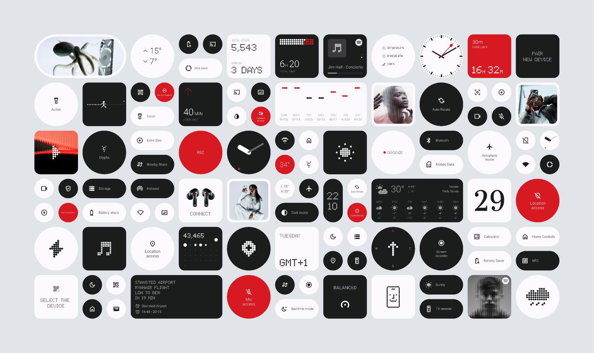

We are Project Manhattan
A single platform where seafood companies manage their products, species data, certifications, trade compliance and supply chain — end to end. No spreadsheets. No silos. Just clarity.
Receiving inputs and then keeping every partner in the supply chain updated continuously is the core of what we do. Project Manhattan never hesitates to deal with the complexity of global seafood trade — we embrace it and simplify it for you.
Vishnu spent 3 years working in the seafood industry, watching companies struggle with the same problems — product data scattered across spreadsheets, certifications tracked in email threads, and no single place to manage compliance.
He had a vision: one platform that connects every part of the seafood supply chain. From the fishing vessel to the processing plant, from the exporter to the retailer — all in one place, speaking the same language.
Project Manhattan was born from that frustration and that vision. Built from scratch, with zero budget and unlimited ambition — designed by someone who understands the industry from the inside.
By the numbers
Being the go-to platform for the global seafood supply chain is our consistent goal. Every company that joins is an opportunity to create another milestone — a more connected, transparent and efficient seafood industry.
We see a world where a buyer in Japan can instantly verify the certifications of a supplier in Norway. Where a retailer in the UK knows exactly which vessel caught their fish, which port it landed at, and whether it meets every import requirement.
That's the world Project Manhattan is building — one module at a time.

Built by someone who has lived the seafood industry — every feature solves a real problem, not a hypothetical one.
GLN, PGLN, ISO country codes, FAO areas, MSC and ASC certifications — all the standards the industry runs on, built right in.
Suppliers, buyers, processors and partners — each sees only what they need, with full control over who can edit, view or manage data.
New modules launching continuously — ports, vessels, MSC fisheries, reports and compliance checks. The platform grows as the industry demands.